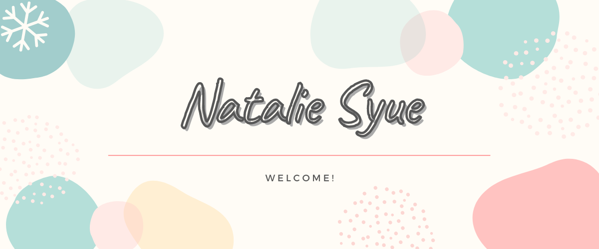
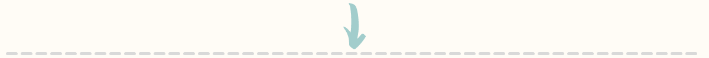

About Me
I am Wen-Rou Syue and most of my friends call me Natalie or just Nata. I’m a fourth-year student in National Tsing Hua University, majoring in the Department of Foreign Languages and Literature. I grew up in Koahsiung, where both the weather and the people are warm all the time. I will also describe myself as a warm and outgoing person. One of my interests is to interact and make friends with people from different groups and with various backgrounds.
During my current college life, I have joined several clubs and taken part in quite many activities. For example, I was the vice president of the student association of our department, which taught me to deal with “official” relationship with other departments and school offices. I was also a member of Koahsiung Group Association, in which I met dozens of friends from various departments and shared our life stories to broaden each other’s horizons. Besides, I attended Bee Partner Program held by the Office of Global Affairs. The program is set up to help Newbies, foreign students in NTHU, get familiar with new environment in a short time and ease cultural shock caused by cultural difference. With this program, I got to know friends all over the world and try to explore the world beyond my comfort zone. To summarize my college life, the most precious thing I have acquired in the past three years is countless good friends as well as the wonderful and valuable memories we create together.
我是薛文柔，朋友們通常都叫我Natalie或Nata。我目前是清華大學大四的學生，就讀外國語文學系。我在高雄長大，那裡的天氣和人們都十分的溫暖熱情，而我也認為我是個溫暖又外向的人。我的興趣之一就是認識來自不同群體、有著不同背景的新朋友們。
我在大學期間加入了一些社團也參與了不少活動，像是外文系學會的副會長，在過程中我也學會處理系學會和校方處事以及他系之間的公共關係。我同時也是雄友會的成員，在那裡我認識了很多不同系的朋友，彼此分享我們的生活也開拓了我的視野。除此之外我也參加了學校全球處舉辦的Bee Partner計畫，這個計畫的設立是希望能幫助清大校內的外籍新生(我們稱他們為Newbie)快速熟悉新環境，也減緩他們因為文化差異產生的衝擊。參加這個計畫讓我能夠認識來自世界各地的朋友，也試著探索在我舒適圈外的世界。簡單總結一下我的大學生活，這三年內我獲得最珍貴的東西莫過於無數的好朋友們還有和他們共創的美好回憶。
Academic Profile
National Tsing Hua University
B.S. in Foreign Languages and Literaute
Skills
1. Software:
Microsoft Word, Excel, PowerPoint
Adobe Photoshop, Illustrator, Premier
2. Language:
Chinese-native
English-fluent
Spanish-conversational
Japanese-conversational
Franch-beginner
Personal Experience
1. NTHU FLL Student Association
2019 Vice President
2. Perhaps Joint Charistmas Party
Event Coordinator
3. GIFT Marketing Proposal Competition, held by Ministry of Education
Fianlists, Team Leader
4. 7th Entrepreneur Days, held by NTHU
Fianlists, Team Leader
5. TimeLinker, Shida Ke Co., Ltd.
Public Relationship Manager
6. DollBao International Corporation.
Brand Marketing Intern